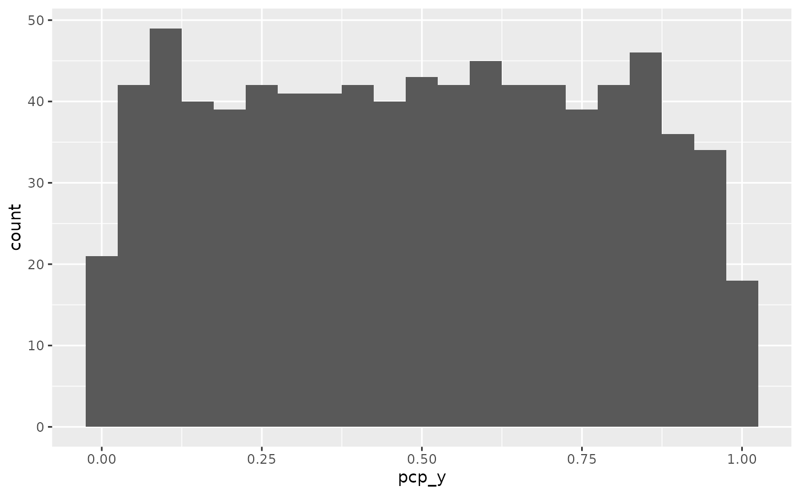

Data wrangling for GPCPs: Step 3 order observations in factor variables
Source:R/pcp_arrange.r
pcp_arrange.RdBreak ties for levels in factor variables, space cases out equally and set an order. Note that only ties in factor variables are addressed this way.
Arguments
- data
data frame - preferably processed using
pcp_selectandpcp_scale.- method
method for breaking ties, one of "from-right", "from-left" or "from-both".
- space
number between 0 and 1, indicating the proportion of space used for separating multiple levels.
- .by_group
logical value. If TRUE, scaling will respect any previous grouping variables. Applies to grouped data frames only.
Value
data frame of the same size as the input data; values of pcp_y and
pcp_yend are adjusted for pcp_class == "factor"
Details
The data pipeline feeding any of the geom layers in the ggpcp package is implemented in a three-step modularized
form rather than as the stat functions more typical for ggplot2 extensions.
The three steps of data pre-processing are:
| command | data processing step |
pcp_select | variable selection (and horizontal ordering) |
pcp_scale | (vertical) scaling of values |
pcp_arrange | dealing with tie-breaks on categorical axes |
Note that these data processing steps are executed before the call to ggplot2
and the identity function is used by default in all of the ggpcp specific layers.
Besides the speed-up by only executing the processing steps once for all layers,
the separation has the additional benefit, that it provides the users with the
possibility to make specific choices at each step in the process. Additionally,
separation allows for a cleaner user interface: parameters affecting the data
preparation process can be moved to the relevant (set of) function(s) only, thereby
reducing the number of arguments without any loss of functionality.
Examples
library(ggplot2)
data(Carcinoma)
# select scores
pcp_data <- Carcinoma |>
pcp_select(A:G) |>
pcp_scale()
# y values are on five different values
table(pcp_data$pcp_y)
#>
#> 0 0.25 0.5 0.75 1
#> 232 210 301 61 22
# spread out y values
pcp_data |> pcp_arrange() |>
ggplot(aes(x = pcp_y)) + geom_histogram(binwidth=0.05)
